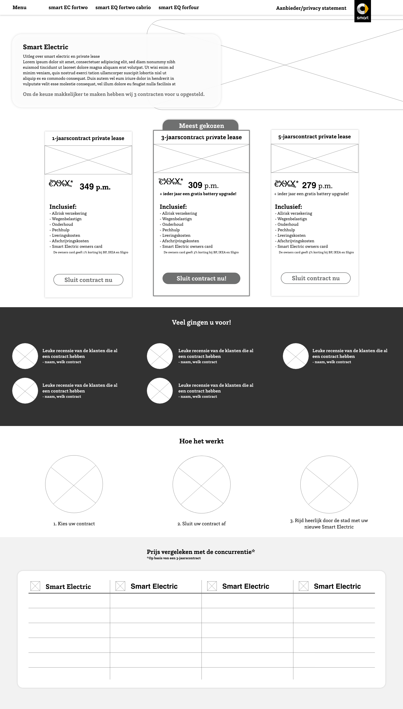
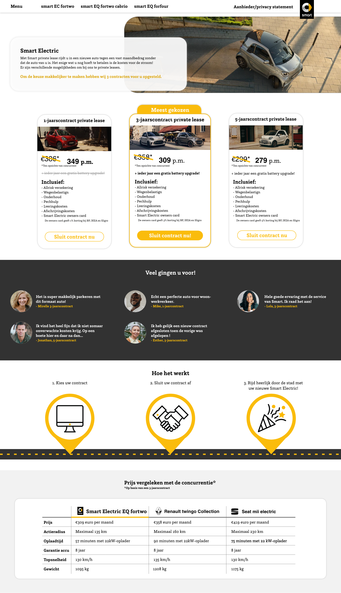

Smart: Private lease
-
Role.
Frontend
-
Team/individual.
Individual
-
Project type.
School
-
Year.
2022
-
Tools.


For this project I designed a landing page for Smart private lease. A landing page means that the customer most likely ended up on this page via a search engine. It is therefore important that all information is on this page, as the customer may not have seen the previous pages. However, the design needs to blend in with the rest of the website in terms of styling.
Design challenge
How do we ensure that the customer receives all information clearly and is thereby convinced to lease a car privately at Smart
Research
Research landing page
Analysis Strato
Things that struck me- The first thing you see is a man looking at you and pointing at you. This gives a personal, but also a bit intimidating feeling
- In addition, it is stated in keywords what you will receive approximately.
- If you scroll down you will see all packages. One is orange framed. It says it's the TV action. This option immediately stands out.
- You can choose whether you want to take out a package per month or per year. They are the same packages, but those for a year are cheaper per month.
- Per package is shown what you get. All related data is at the same height, so it's easy to compare.
- Furthermore, the page states what they offer. It's a bit repetitive, this would annoy me.
Source: [https://www.strato.nl/hosting/](https://www.strato.nl/hosting/)
Analysis Ziggo internet & TV
Things that struck me- For the options you have to scroll down quite far.
- Many photos with people/families have been used.
- In the packages, the latter is emphasized by making things that are advantageous with this package in bold.
- With the first package it is indicated what you do not get with this package, but with the other two.
- Ziggo has won an award for best internet provider. Let them know!
- The people who play in the advertisement can also be seen on this page.
- At the bottom of the page is an FAQ section. This can help answer customer questions, if they had any at all.
Source: [https://www.ziggo.nl/tv-internet](https://www.ziggo.nl/tv-internet)
Analysis take daily
Things that struck me- The first thing that stood out were photos of people holding a takedaily box with a text cloud about what they think of takedaily. This immediately gives a personal feeling.
- Then it is explained how they work. You can do a test or put together something yourself.
- After additional explanation, they have even more reviews. There are no photos here.
- Do not necessarily have an x number of options. You fill in a questionnaire and something is put together based on your answers. That gives a feeling of reciprocity, because they make a plan especially for you.
Source: [https://takedaily.nl/](https://takedaily.nl/)
Analysis call simple iPhone 11 subscription
Things that struck me- you first see the product itself. you can fill in the options you want. You don't have to do this, because there are already options for your card next to it.
- The first option (top) is framed in blue: tele2 I Want To Weeks (action).
- Then all subscriptions are listed below each other. You can choose what you want to sort.
Source: [https://www.belsimpel.nl/apple-iphone-11/128gb-zwart/abonnement?colour[0]=black&storage_size[0]=128000#_](https://www.belsimpel.nl/ apple-iphone-11/128gb-black/subscription?colour%5B0%5D=black&storage_size%5B0%5D=128000#_)
Conclusion research
- Reviews for trust
- Show the product well. Make sure the customer knows what he is getting
- Photos for personality
- Repeat is allowed, but not too often
-
Make package stand out by:
- Border color
- Emphasize content/benefits
- Emphasize disadvantages of others
-
Me-Fi
 -
Hi-Fi
